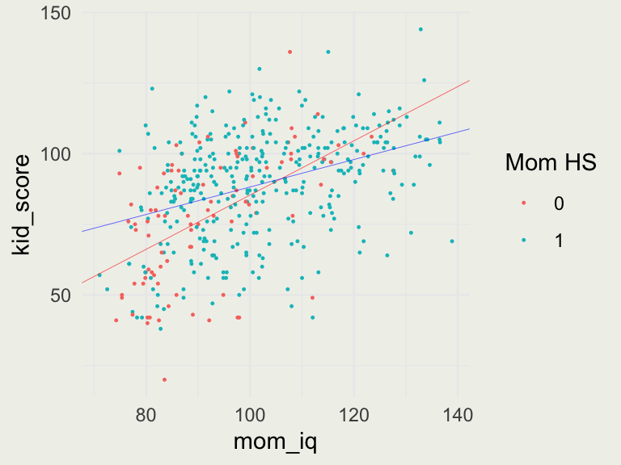

Non-linear models like: \(\log(y) = a + b\log(x) + \epsilon\)
Generalized Linear Models (GLMs), which can, for example, fit binary data, categorical data, and so on
Nonparametric models that are popular in Machine Learning that can learn flexible, functional forms between \(y\) and \(X\)
The latter is not a panacea — if you have a good or good enough functional form, predictions will generally be better and the model will generalize better
Simulating a Simple Regression
Fitting simulated data is a good start for an analysis
library(rstanarm)n <-15; x <-1:na <-0.5b <-2sigma <-3y <- a + b*x +rnorm(n, mean =0, sd = sigma) # or sigma * rnorm(n)data <-data.frame(x, y)fit1 <-stan_glm(y ~ x, data = data, refresh =0) print(fit1)
stan_glm
family: gaussian [identity]
formula: y ~ x
observations: 15
predictors: 2
------
Median MAD_SD
(Intercept) 0.1 1.4
x 2.1 0.2
Auxiliary parameter(s):
Median MAD_SD
sigma 2.6 0.5
------
* For help interpreting the printed output see ?print.stanreg
* For info on the priors used see ?prior_summary.stanreg
Data from a survey of adult American women and their children (a subsample from the National Longitudinal Survey of Youth).
knitr::kable(rstanarm::kidiq[1:8, ])
kid_score
mom_hs
mom_iq
mom_age
65
1
121.11753
27
98
1
89.36188
25
85
1
115.44316
27
83
1
99.44964
25
115
1
92.74571
27
98
0
107.90184
18
69
1
138.89311
20
106
1
125.14512
23
Single Binary Predictor
fit2 <-stan_glm(kid_score ~ mom_hs, data = kidiq, refresh =0) print(fit2)
stan_glm
family: gaussian [identity]
formula: kid_score ~ mom_hs
observations: 434
predictors: 2
------
Median MAD_SD
(Intercept) 77.6 2.0
mom_hs 11.8 2.4
Auxiliary parameter(s):
Median MAD_SD
sigma 19.9 0.7
------
* For help interpreting the printed output see ?print.stanreg
* For info on the priors used see ?prior_summary.stanreg
Our model is \(\text{kid_score} = 78 + 12 \cdot \text{mom_hs} + \epsilon\)
What is the average IQ of kids whose mothers did not complete high school? (in this dataset)
What is the average IQ of kids whose mothers completed high school?
fit3 <-stan_glm(kid_score ~ mom_iq, data = kidiq, refresh =0) print(fit3)
stan_glm
family: gaussian [identity]
formula: kid_score ~ mom_iq
observations: 434
predictors: 2
------
Median MAD_SD
(Intercept) 26.0 6.1
mom_iq 0.6 0.1
Auxiliary parameter(s):
Median MAD_SD
sigma 18.3 0.6
------
* For help interpreting the printed output see ?print.stanreg
* For info on the priors used see ?prior_summary.stanreg
Our model is \(\text{kid_score} = 26 + 0.6 \cdot \text{mom_iq}+ \epsilon\)
How much do kids’ scores improve when maternal IQ differs by 10 points?
What is the meaning of the intercepts = 26 here?
Simple Transformations
We will create a new variable called mom_iq_c, which stands for centered
The transformation: \(\text{mom_iq_c}_i = \text{mom_iq}_i - \overline{\text{mom_iq}}\)
stan_glm
family: gaussian [identity]
formula: kid_score ~ mom_iq_c
observations: 434
predictors: 2
------
Median MAD_SD
(Intercept) 86.8 0.9
mom_iq_c 0.6 0.1
Auxiliary parameter(s):
Median MAD_SD
sigma 18.3 0.6
------
* For help interpreting the printed output see ?print.stanreg
* For info on the priors used see ?prior_summary.stanreg
Our model is \(\text{kid_score} = 87 + 0.6 \cdot \text{mom_iq_c}+ \epsilon\)
What is the meaning of the intercepts in this model?
Single Continous Predictor
p <-ggplot(aes(mom_iq, kid_score), data = kidiq)p +geom_point(size =0.2) +geom_abline(intercept =coef(fit3)[1], slope =coef(fit3)[2], linewidth =0.1)
stan_glm
family: gaussian [identity]
formula: kid_score ~ mom_hs + mom_iq_c
observations: 434
predictors: 3
------
Median MAD_SD
(Intercept) 82.2 1.9
mom_hs 6.0 2.2
mom_iq_c 0.6 0.1
Auxiliary parameter(s):
Median MAD_SD
sigma 18.2 0.6
------
* For help interpreting the printed output see ?print.stanreg
* For info on the priors used see ?prior_summary.stanreg
Our model is now: \(\text{kid_score} = 82 + 6 \cdot \text{mom_hs} + 0.6 \cdot \text{mom_iq_c}+ \epsilon\)
Write down the interpretation of each coefficient
Combining the Predictors
stan_glm
family: gaussian [identity]
formula: kid_score ~ mom_hs + mom_iq
observations: 434
predictors: 3
------
Median MAD_SD
(Intercept) 25.8 5.9
mom_hs 6.0 2.3
mom_iq 0.6 0.1
Auxiliary parameter(s):
Median MAD_SD
sigma 18.2 0.6
------
* For help interpreting the printed output see ?print.stanreg
* For info on the priors used see ?prior_summary.stanreg
Our model is: \(\text{kid_score} = 26 + 6 \cdot \text{mom_hs} + 0.6 \cdot \text{mom_iq}+ \epsilon\)
For moms that did not complete high school, the line \(y = 26 + 0.6 \cdot \text{mom_iq}\)
p <-ggplot(aes(mom_iq, kid_score), data = kidiq)p +geom_point(aes(color =as.factor(mom_hs)), size =0.2) +labs(color ="Mom HS") +geom_abline(intercept =coef(fit6)[1], slope =coef(fit6)[3], linewidth =0.1, color ='red') +geom_abline(intercept =coef(fit6)[1] +coef(fit6)[2], slope =coef(fit6)[3], linewidth =0.1, color ='blue')
Adding Interactions
In the previous model, we forced the slopes of mothers who completed and did not complete high school to be the same — the only difference was the intercept
To allow the slopes to vary, we include an interaction term
stan_glm
family: gaussian [identity]
formula: kid_score ~ mom_hs + mom_iq + mom_hs:mom_iq
observations: 434
predictors: 4
------
Median MAD_SD
(Intercept) -10.6 13.7
mom_hs 50.2 15.1
mom_iq 1.0 0.1
mom_hs:mom_iq -0.5 0.2
Auxiliary parameter(s):
Median MAD_SD
sigma 18.0 0.6
------
* For help interpreting the printed output see ?print.stanreg
* For info on the priors used see ?prior_summary.stanreg
For \(\text{mom_hs} = 0\), the line is: \(\text{kid_score} = -10 + 1 \cdot \text{mom_iq}\)
For \(\text{mom_hs} = 1\), the line is: \(\text{kid_score} = -10 + 49 \cdot 1 + 1 \cdot \text{mom_iq} - 0.5 \cdot 1 \cdot \text{mom_iq} = 39 + 0.5\cdot \text{mom_iq}\)
Visualizing Interactions
p <-ggplot(aes(mom_iq, kid_score), data = kidiq)p +geom_point(aes(color =as.factor(mom_hs)), size =0.2) +labs(color ="Mom HS") +geom_abline(intercept =coef(fit7)[1], slope =coef(fit7)[3], linewidth =0.1, color ='red') +geom_abline(intercept =coef(fit7)[1] +coef(fit7)[2], slope =coef(fit7)[3] +coef(fit7)[4], linewidth =0.1, color ='blue')

Interpreting Coefficients in Complex Non-Linear Models
Models that have many parameters, many interactions, and are non-linear are difficult to interpret by looking at parameters marginally (i.e., one at a time)
For this reason, we typically rely on assessing how changes to model inputs affect model predictions, not the impact of each parameter
Predictions take all the parameter values and their interactions into account
Uncertainty and Prediction
We return to our simple linear regression model: \(\text{kid_score} = 26 + 0.6 \cdot \text{mom_iq}+ \epsilon\)
We can extract the simulations of all plausible parameter values (called a posterior distribution in Bayesian analysis)
post <-as.matrix(fit3)dim(post)
[1] 4000 3
knitr::kable(post[1:5, ])
(Intercept)
mom_iq
sigma
31.77474
0.5396861
18.28899
27.21061
0.5917098
18.20332
27.27470
0.5942835
18.29135
26.54087
0.6114706
18.79476
25.46339
0.6054314
17.86559
Uncertainty and Prediction
Using these simulations we display 50 plausible regression lines
# What is the probability that the coefficient of mom_iq is > 0.6mean(post[, "mom_iq"] >0.6) |>round(2)
[1] 0.55
Types of Prediction
Point prediction: \(\hat{a} + \hat{b}x^{\text{new}}\) — predicting expected average \(y\) — don’t recommend
Linear predictor with uncertainty in \(a\) and \(b\): \(a + bx^{\text{new}}\) — predicting uncertainty around the expexted average value of \(y\) — typically used to assess treatment effect
Predictive distribution: \(a + bx^{\text{new}} + \epsilon\) — predictive uncertainty around a new \(y\) — used to predict for a new individual (not ATT)
Prediction in RStanArm
We observe a new kid whose mom’s IQ = 120
Point prediction is shown in Red, 90% uncertainty around the average kid score in Blue, and 90% predictive uncertainty for a new kid is in Yellow.